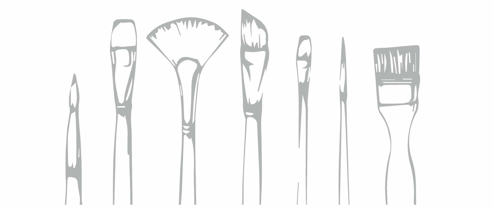

Brief Biography
Darya Wynter a Ukrainian born Canadian artist. She has been interested in various forms of art since and early age. She studied music everything from music, photography, fine art, to videography. Currently she is a multidisciplinary practicing artist and designer. Her art often depicts nature, animals, people and the essence of the unusual. Her design varies depending on the project and the task at hand. However, her capabilities include, typography, logo design, illustration among other design work.
